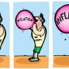

Florin Georgescu este un alt nume pentru inflaţie, scrie unul dintre cei mai experimentaţi jurnalişti economici români, Moise Guran. Realizatorul emisiunilor Biz Bazar şi Ora de Business e un apropiat al Băncii Naţionale (BNR), cunoscându-l pe ministrul finanţelor publice din cabinetul Ponta I încă din vremea primului mandat exercitat de Georgescu, în guvernul Văcăroiu (1992-1996).
Inflaţia – resursa pentru pomenile electorale
Majorăm!
Leul a atins azi cel mai slab curs oficial din istorie în raport cu Euro (4,4373), pe fondul declaraţiilor populiste ale premierului Victor Ponta. BNR nu intervine în apărarea monedei naţionale, deşi are resursele necesare. Cursul alunecă spre nivelul psihologic de 4,5, prag pe care probabil îl va depăşi în perioada următoare. E o mişcare controlată, care are rolul de a induce inflaţia necesară pentru respectarea promisiunilor electorale ale Uniunii Social Liberale (USL). Reamintim că şi guvernul condus de Mihai Răzvan Ungureanu părea dispus să dea drumul robinetului cu pomană începând cu 1 iunie.
Inflaţie prin curs
Poţi creşte salariile tuturor bugetarilor cu 15% deşi economia nu produce mai mult? Poţi majora pensiile în condiţiile în care sistemul public e un mecanism piramidal, care seamănă cu o schemă Ponzi? Da, cu o condiţie. Creşterile trebuie să fie nominale, nu reale. Adică e nevoie de inflaţie, pentru ca statul să încaseze, teoretic, mai mult.
Dacă produsul X – care conţine elemente importate – se scumpeşte, cresc automat şi încasările scriptice ale statului. Pe hârtie, guvernul Ponta colectează mai mult. Cum PIB-ul nominal reflectă suma valorii de piaţă a tuturor mărfurilor şi serviciilor destinate consumului final, România va putea raporta, formal, creştere economică în faţa Fondului Monetar Internaţional (FMI). Guvernul USL se va mândri că a crescut şi toate salariile bugetare, a mărit şi pensiile, iar ca bonus, a obţinut creşterea Produsului Intern Brut nominal. Nu e Florin Georgescu un ministru bun? Pentru rata inflaţiei, vom da vina pe Mugur Isărescu şi mai ales pe contextul internaţional dificil, uitând că anul trecut, când presa avea astfel de titluri, euro abia trecea de 4,15 lei.
Cine plăteşte?
Orice se decontează în economie. Cine va plăti efectele majorării salariilor şi pensiilor în condiţii de deficit bugetar şi încetinire economică?
- Mediul privat
Pomana electorală destinată bugetarilor şi pensionarilor va fi plătită, prin inflaţie, în primul rând de către mediul privat, unde veniturile reflectă doar performanţa cuantificabilă, nefiind dictate din pix.
- Debitorii în monedă străină
Apoi, toţi cei care au contractat credite în alte monede decât leul, vor plăti rate mai mari. Indiferent dacă sunt lucrează la stat sau nu.
- Bugetarii
Bugetarii înşişi vor constata că, deşi au salariul mai mare, puterea lor de cumpărare s-a diminuat.
- Pensionarii
În mod ironic, tocmai electoratul tradiţional al PSD, pensionarii, vor avea cea mai scurtă bucurie. Pentru că efectele inflaţioniste ale deprecierii leului se vor observa, mai întâi, în preţul bunurilor de larg consum (FMCG), iar inflaţia psihologică e deja vizibilă în pieţele agroalimentare.
Jocul politic: care dai mai mult?
“Boc e rău că ne-a luat, Ponta e bun că ne dă“. La asta se rezumă raţionamentul unei părţi semnificative a electoratului românesc. În condiţiile unei culturi financiare primitive (demonstrate şi de ascensiunea aberantă a PP-DD, formaţiunea care promite câte 20.000 de Euro fiecărui român care votează cu Dan Diaconescu), miza guvernării înainte de alegeri sunt darurile. După scrutin, spirala inflaţionistă îşi urmează cursul firesc, prin majorarea taxelor şi impozitelor.
Din patru în patru ani, economia reală încasează câte un puseu inflaţionist. Din fericire, are încă trei ani la dispoziţie pentru a-şi reveni, înainte de a fi lovită din nou de iresponsabilitatea politicienilor obişnuiţi (sau forţaţi) să guverneze mioritic. Că doar nu suntem elveţieni.


{kind=link}
{kind=link}
{kind=link}
{kind=link}
uite ca nu m-am gindit ca devalorizarea asta ar fi una “controlata”. Si mai ales, controlata in acest scop!
Ai dracu de hoti prostovani!!Nu pricepeam cum de s-au scumpit cartofii cu 50% de la 0,8 lei pe kil la 1,2 in ultima saptamana desi au aparut cartofii cei noi si logic era sa ii ieftineasca aia vechi!!
Ar mai trebui reactualizat graficul pe axa timp, euro-ul sare mult.
@cineva, aşa e. Între timp, graficul cursului arată astfel, validând întocmai ipotezele acestui articol, care a fost publicat în 14 mai 2012.
De altfel, din calculele noastre, intervalul 4,5-4,6 este exact raportul necesar pentru ca şi a doua tranşă de
majorăripomană electorală să fie posibilă. Cursul din 1 octombrie 2012 trebuie prins la aceste valori, pentru ca statul să încaseze accize mai mari. După, nu prea mai contează.Comments on this entry are closed.